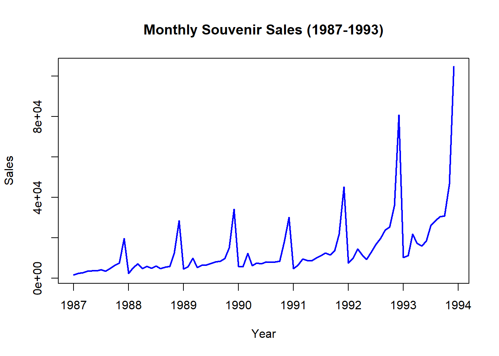
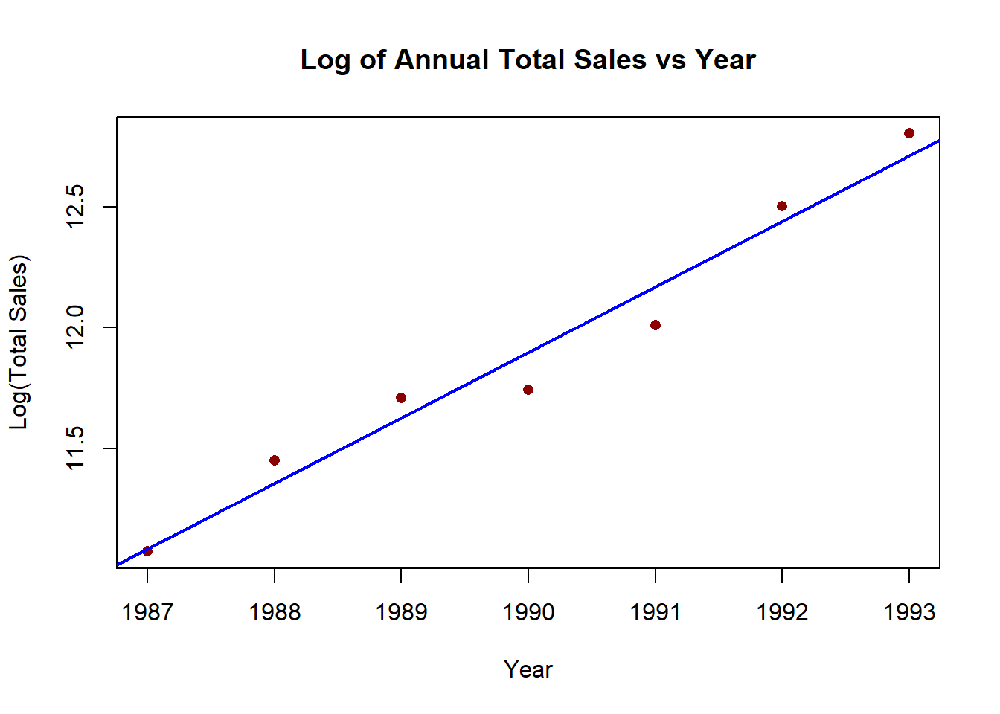
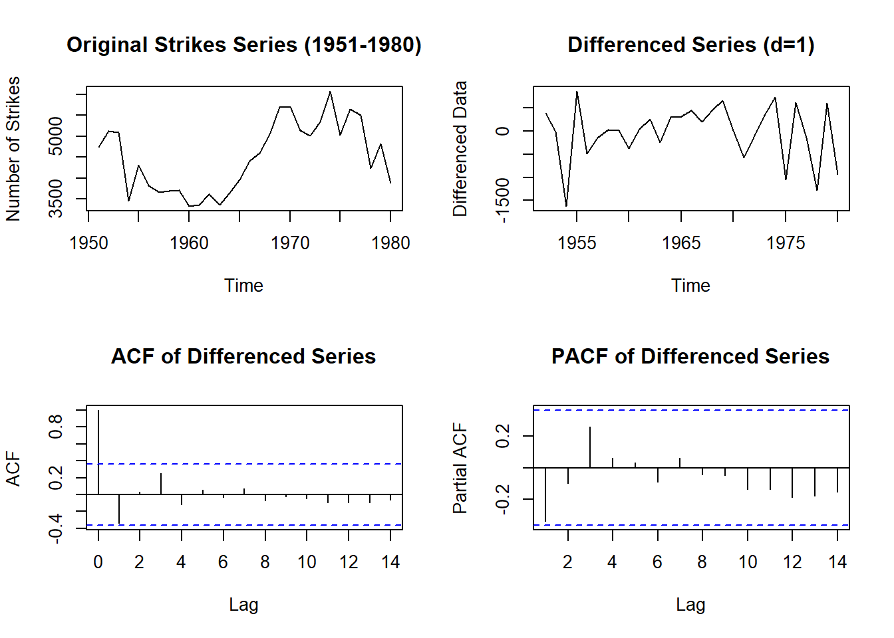
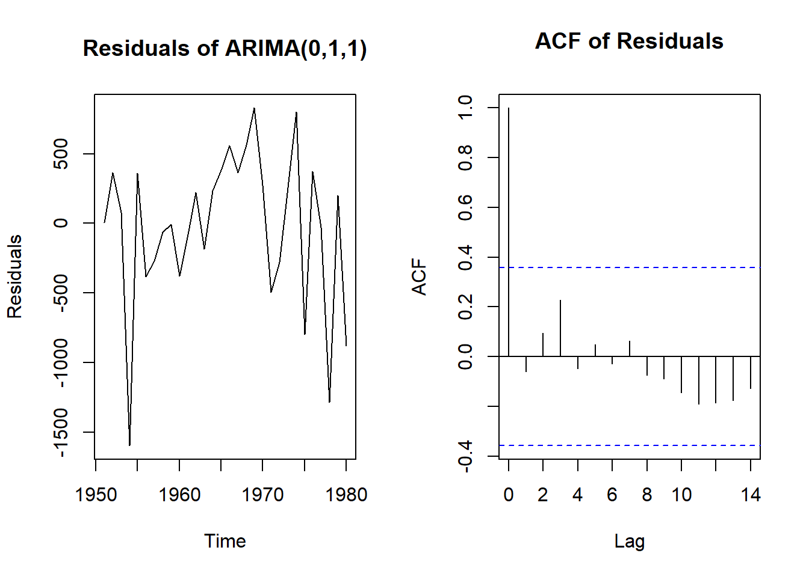
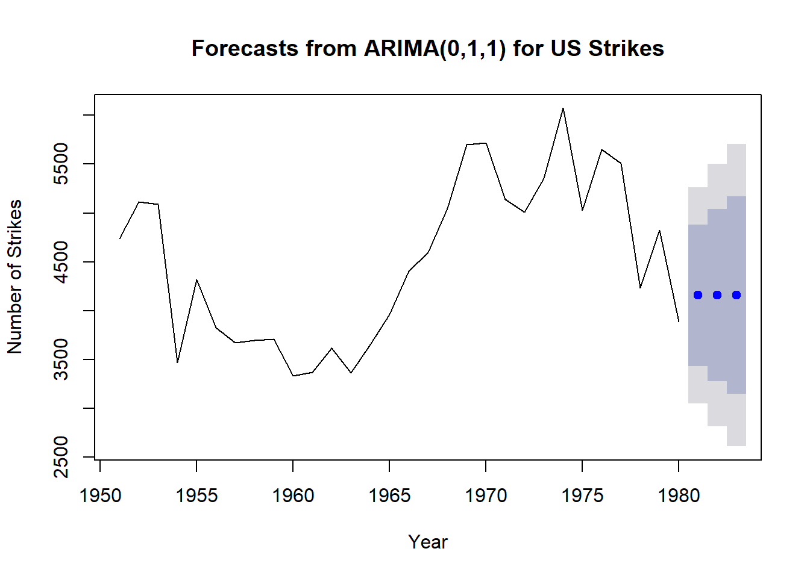

Show R code
# libraries
library(forecast)Warning: package 'forecast' was built under R version 4.5.3# libraries
library(forecast)Warning: package 'forecast' was built under R version 4.5.3Problem definition: Define the specific objective, which is forecasting the future sales volume for the manufacturer’s various biscuit products. This involves determining the forecasting horizon and how the business will use these forecasts, such as for ordering raw ingredients, scheduling factory shifts, or managing warehouse inventory.
Data collection: Gather the historical sales data for all the different biscuit product lines. This step also involves collecting relevant explanatory variables that drive demand, such as past marketing promotions, holiday schedules, pricing changes, or competitor actions.
Data analysis: Explore the historical biscuit sales data visually and statistically to identify underlying patterns. This includes checking for seasonality, long-term trends, and identifying or cleaning any missing records or outliers.
Model selection and fitting: Choose appropriate forecasting methods based on the data patterns and estimate the model parameters using the historical sales data for each biscuit type. As the diagram shows, this step may loop back to data analysis if the initial models don’t fit well.
Model validation: Evaluate how accurately the chosen models predict future sales before relying on them. This involves splitting the historical biscuit data into a training set and a hold-out test set to calculate forecast accuracy metrics and checking the residuals to ensure the model has captured all the available information.
Forecasting model deployment: Implement the finalized forecasting models into the biscuit manufacturer’s IT infrastructure. This allows supply chain managers and production planners to automatically generate and access the sales forecasts for their operational planning.
Monitoring forecasting model performance: Continuously track the accuracy of the forecasts by comparing the predicted biscuit sales against the actual sales data as new data becomes available. If the forecast errors begin to widen over time the thus the models will need to be re-evaluated and updated.
For each of the following series, what sort of time patterns would you expect to see?
I would expect to see seasonal patterns that repeat annually, I would also expect to see some sort of trend presenting the long term change in sales over time.
I would expect to see some sort of seasonality for certain hours of in regards to pulse rate, such as when there is sleep. However, a week may not be long enough to indicate any sort of trend in the data
Daily sales at a fast-food store for six months I would expect to see weekly seasonality where certain days in the week have a patter in the daily sales orders.
Weekly electricity consumption for your local area over the past 10 years. I would expect distinct consumption peaks during the winter months driven by heating demands, and lower consumption during the milder shoulder seasons.
| Time Series Plot | ACF Plot | Reasoning |
|---|---|---|
| 1. Daily morning temperature of a cow | B | The series wanders randomly without a distinct repeating period. ACF B matches this by showing a slow, smooth decay, which is typical for highly autocorrelated data with no seasonality. |
| 2. Accidental deaths in USA (monthly) | A | There is a strong, consistent monthly seasonality but no overall trend. ACF A shows this stationary seasonal pattern perfectly, with clear spikes every 12 lags. |
| 3. International airline passengers | D | The plot shows a strong upward trend combined with monthly seasonality. ACF D matches this because the strong trend causes the ACF to decay very slowly overall, while the seasonality creates the small bumps along the decay. |
| 4. Annual mink trappings (Canada) | C | This series exhibits a long cycle (roughly 10 years between peaks) rather than fixed monthly seasonality. ACF C reflects this cyclical behavior, as the autocorrelation oscillates and peaks around lag 10. |
# data
knives_sales <- c(19, 15, 39, 102, 90, 29, 90, 46, 30, 66, 80, 89, 82, 17, 26, 29)
n <- length(knives_sales)k_values <- c(3, 5, 7, 9, 11)
forecasts_May92 <- sapply(k_values, function(k) {
mean(tail(knives_sales, k))
})
names(forecasts_May92) <- paste0("MA_", k_values)
forecasts_May92 MA_3 MA_5 MA_7 MA_9 MA_11
24.00000 48.60000 55.57143 51.66667 53.09091 # initializing matrix to store
max_k <- n - 1
mse_values <- numeric(max_k)
# loop to calculate mse for eacj value of k
for (k in 1:max_k) {
errors <- numeric(n - k)
for (t in (k + 1):n) {
fc = mean(knives_sales[(t - k):(t - 1)])
errors[t - k] <- knives_sales[t] - fc
}
mse_values[k] <- mean(errors^2)
}
optimal_k <- which.min(mse_values)
optimal_k[1] 1515 should be chosen
# Loading the data
souvenir_data <- c(
1664.81, 2397.53, 2840.71, 3547.29, 3752.96, 3714.74, 4349.61, 3566.34, 5021.82, 6423.48, 7600.6, 19756.21,
2499.81, 5198.24, 7225.14, 4806.03, 5900.88, 4951.34, 6179.12, 4752.15, 5496.43, 5835.1, 12600.08, 28541.72,
4717.02, 5702.63, 9957.58, 5304.78, 6492.43, 6630.8, 7349.62, 8176.62, 8573.17, 9690.5, 15151.84, 34061.01,
5921.1, 5814.58, 12421.25, 6369.77, 7609.12, 7224.75, 8121.22, 7979.25, 8093.06, 8476.7, 17914.66, 30114.41,
4826.64, 6470.23, 9638.77, 8821.17, 8722.37, 10209.48, 11276.55, 12552.22, 11637.39, 13606.89, 21822.11, 45060.69,
7615.03, 9849.69, 14558.4, 11587.33, 9332.56, 13082.09, 16732.78, 19888.61, 23933.38, 25391.35, 36024.8, 80721.71,
10243.24, 11266.88, 21826.84, 17357.33, 15997.79, 18601.53, 26155.15, 28586.52, 30505.41, 30821.33, 46634.38, 104660.67
)
souvenir_ts <- ts(souvenir_data, start = c(1987, 1), frequency = 12)plot(souvenir_ts, main="Monthly Souvenir Sales (1987-1993)", ylab="Sales", xlab="Year", col="blue", lwd=2)
The seasonality in the dataset seems to grow with time. In represents that the monthly sales seasonality might be multiplicative and a possible transformation of the data is required.
years <- seq(1987, 1993)
yearly_totals <- tapply(souvenir_data, rep(years, each = 12), sum)
log_yearly_totals <- log(yearly_totals)
sales_lm <- lm(log_yearly_totals ~ years)
plot(years, log_yearly_totals, main="Log of Annual Total Sales vs Year",
xlab="Year", ylab="Log(Total Sales)", pch=16, col="darkred")
abline(sales_lm, col="blue", lwd=2)
future_years <- data.frame(years = c(1994, 1995, 1996))
log_fc <- predict(sales_lm, newdata = future_years, interval = "prediction", level = 0.95)
forecast_table <- data.frame(Year = future_years$years, log_fc)
forecast_table Year fit lwr upr
1 1994 12.98182 12.56621 13.39743
2 1995 13.25241 12.79951 13.70531
3 1996 13.52299 13.02832 14.01767raw_fc <- exp(log_fc)
forecast_table_raw <- data.frame(Year = future_years$years, raw_fc)
forecast_table_raw Year fit lwr upr
1 1994 434443.2 286705.8 658308.8
2 1995 569439.2 362039.3 895651.3
3 1996 746382.8 455121.9 1224039.9A classic example of a non-stationary series is the daily closing IBM stock prices.Figure 3 shows the analysis of n = 369 daily closing prices for IBM stock. Explain how eachplot shows the series is non-stationary and should be differenced.
The first plot shows periods of high closing prices followed by periods of low closing prices, wandering without a stable baseline, which indicates the mean is not constant over time. The ACF plot shows persistence in the effect of past lags on the current price value, with the spikes decaying very slowly rather than quickly dropping to zero. This slow decay confirms the series is non-stationary. Finally, the PACF plot shows almost a 1 autocorrelation with the previous closing price, meaning that the current price is heavily based on the previous day’s closing price. Together, these plots show the series closely follows a random walk and needs to be differenced to make it stationary.
# data
strikes_data <- c(4737, 5117, 5091, 3468, 4320, 3825, 3673, 3694, 3708, 3333,
3367, 3614, 3362, 3655, 3963, 4405, 4595, 5045, 5700, 5716,
5138, 5010, 5353, 6074, 5031, 5648, 5506, 4230, 4827, 3885)
strikes_ts <- ts(strikes_data, start = 1951)diff_strikes <- diff(strikes_ts)
par(mfrow=c(2,2))
plot(strikes_ts, main="Original Strikes Series (1951-1980)", ylab="Number of Strikes")
plot(diff_strikes, main="Differenced Series (d=1)", ylab="Differenced Data")
acf(diff_strikes, main="ACF of Differenced Series")
pacf(diff_strikes, main="PACF of Differenced Series")
par(mfrow=c(1,1))The original strikes series plot shows a wandering mean, indicating the data is non-stationary and requires first-order differencing d = 1. The differenced series plot shows the data now fluctuates around a constant mean of zero, confirming stationarity has been achieved. The ACF plot of the differenced series has a single significant negative spike at lag 1 and then cuts off, which indicates a Moving Average order of 1 q = 1. The PACF plot tails off gradually, indicating an Autoregressive order of 0 p = 0. Because the series required one difference and the differenced data exhibits an MA(1) signature, an ARIMA(0,1,1) model is appropriate.
\[(1 - B)Y_t = (1 + \theta_1 B)\epsilon_t\]
Where:
strikes_model <- arima(strikes_ts, order = c(0, 1, 1))
print(strikes_model)
Call:
arima(x = strikes_ts, order = c(0, 1, 1))
Coefficients:
ma1
-0.3094
s.e. 0.1515
sigma^2 estimated as 319408: log likelihood = -224.98, aic = 453.95par(mfrow=c(1,2))
plot(residuals(strikes_model), main="Residuals of ARIMA(0,1,1)", ylab="Residuals")
acf(residuals(strikes_model), main="ACF of Residuals")
par(mfrow=c(1,1))
Box.test(residuals(strikes_model), type = "Ljung-Box", lag = 10)
Box-Ljung test
data: residuals(strikes_model)
X-squared = 4.2581, df = 10, p-value = 0.935Ljung-Box test yielded a large p-value, which confirms that there is no remaining autocorrelation and that the ARIMA(0,1,1) model has adequately captured the dependence in the data. The acf plot of the residuals also shows no significant lags
last_Y <- tail(strikes_ts, 1)
last_residual <- tail(residuals(strikes_model), 1)
theta_1 <- coef(strikes_model)["ma1"]
r_forecasts <- forecast(strikes_model, h = 3)
r_forecasts Point Forecast Lo 80 Hi 80 Lo 95 Hi 95
1981 4157.329 3433.045 4881.614 3049.632 5265.027
1982 4157.329 3277.106 5037.553 2811.144 5503.515
1983 4157.329 3144.908 5169.751 2608.964 5705.695plot(r_forecasts, main="Forecasts from ARIMA(0,1,1) for US Strikes",
xlab="Year", ylab="Number of Strikes",
fcol="blue", shaded=TRUE)
8a) The equation represents an ARIMA(4,0,0) model. The series is modeled using four autoregressive lags p = 4, is not differenced d = 0, and contains no moving average terms q = 0.
8b) The PACF plot shows significant spikes at lags 1 and 4 before cutting off, while the ACF plot decays gradually. The combination of a tailing-off ACF and a PACF cutting off after 4 lags indicates an Autoregressive process of order 4, making an ARIMA(4,0,0) model appropriate.
8c) 
This tutorial helped me connect the stages of a time series analysis, from defining the forecasting problem and exploring patterns to fitting models and checking residuals. The souvenir-sales example made the role of a log transformation clearer, particularly when seasonal fluctuations increase with the level of the series.
The strikes example helped me connect differencing and ACF/PACF patterns to a candidate ARIMA model. Writing the model using the backshift operator also helped link the notation to its implementation in R. I learnt that plots and diagnostic tests provide evidence for modelling decisions, rather than proving that a model is correct.
My next steps are to complete the hand-calculated forecasts and improve the moving-average comparison by evaluating each window size over the same forecast periods. I would also like more practice interpreting prediction intervals and checking forecasts on the original scale after transformation.